我的角色：
UIUX設計師/前端協作溝通
應用裝置：
Web / Pad / Mobile
製作時間：
5 months
完成日期：
2023.10.04
前期研究
專案介紹
一趟完美的旅遊背後是需要耗費很多研究時間，該如何幫助用戶在繁雜的資訊中，仍可以輕鬆選購行程團是本次改版的目標。
因專案時程有限，額外與組員利用下班時間進行詳細的UX研究，找出解決痛點的解方，增加用戶黏著度。
負責項目
介面設計、流程優化、研究訪談、易用性測試
團隊成員
1位專案 / 2位UIUX設計師 / 1位前端工程師 / 1位後端工程師
01.我的貢獻
專案中我主要的任務是輔助研究調查及分擔部分內頁設計，經過研究提出喜好度填寫機制，提升首頁推出的內容可以更精準地抓到用戶的需求，接著結合比較清單功能輕鬆分析行程優缺點，增加閱讀便利性，並優化後台的維護模式，減少人員的上稿時間。
02.面臨的挑戰
旅遊介紹資訊往往冗長且繁多，需在不減少內容的條件下完成簡潔的版面配置，其中結合動態功能，旨在兼顧美感和實用性，找到兩者之間的平衡是非常重要的關鍵要素。 由於客戶資金有限，無法採納所有設計方案，加上時程緊迫，研究的時間也不充裕，因此需要對部分項目進行取捨，以完成當前階段必須執行的基本項目。
03.結果與影響
上線兩個月網站新增使用者人數從1564人提升至4869人，活躍用戶數量約為3000多人。後台維護人員上架時程減少50%左右的工時，加速工作效率。
設計流程
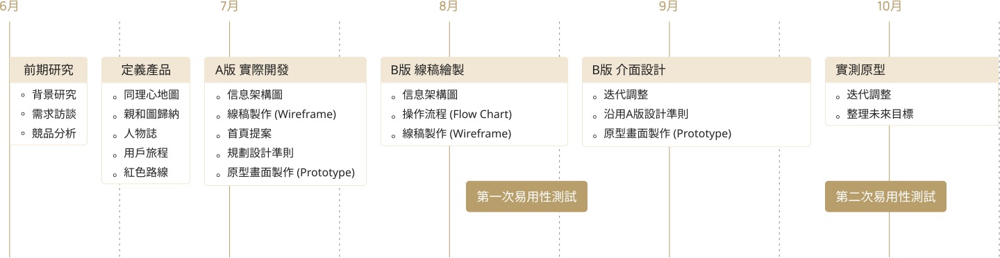
需求洞察
與客戶需求訪談後得到很多反饋，列出以下最常見的問題，整理內容如下表所示：
訪談洞察一：版面風格凌亂影響閱讀，行程比較不方便，需來回切換頁面，或是自行整理優缺點。
心情影響線：版面過於老舊，資訊呈現不清楚，不易快速查看到行程重點，導致研究過程耗時。
頁面好亂，我找不到資訊在哪...
比較行程時都要反覆切換頁面，資訊內容也需自己整理分析，看的好煩躁！
訪談洞察二：無進階篩選功能，搜尋行程不易。
心情影響線：搜尋結果無法精確篩選出合適的行程，資料過於繁雜，使得用戶在挑選時感到困惑。
搜尋結果不能篩選或是排序想要的條件嗎？
搜尋頁的行程太多，不知道從何挑選。
訪談洞察三：後台維護方式過於呆板，耗時又繁瑣。
心情影響線：行程資訊相同，卻要重複上稿，修改項目時也要逐一單項調整，維護耗時且不友善。
行程資訊重複卻不能共同維護，逐一修改很麻煩。
每日行程會有部分資訊不同，希望共同維護時仍保留可單項微調的空間。
後台操作攸關公司機密無法於線上發布，細節說明待面試階段會使用PPT介紹優化後的流程。
競品分析
針對規模差不多的旅行社進行優缺點分析
HMW 我們如何能夠
經由需求訪談及競品分析，我們獲得了許多反饋，並列出了以下常見問題及初步解決方案，整理內容如下方所示：
未有明確旅行目的用戶
我們如何幫助用戶找到心儀的行程？
現階段問題：用戶只能透過國家分類尋找心儀的行程，無進一步如時間或價錢等篩選機制。
我們如何協助使用者輕鬆查看不同行程？
現階段問題：用戶看到感興趣的行程，無法儲存收藏或得自行開取多個視窗切換畫面進行比較。
初步發想解方
選單分類優化及搜尋器篩選
規劃比較清單及收藏功能
已有明確旅行目的用戶
我們如何改善用戶查看行程的體驗？
現階段問題：行程及出團日期的資訊太多層級及繁瑣，用戶找不到想要的資訊。
我們如何改善下單流程？
現階段問題：每次下單資料得一直重複填寫，令用戶焦慮煩躁。
初步發想解方
日曆形式及頁面層級調整
購物車流程優化/記錄常用旅客資料
透過訪談及競品分析，確定了初步的改善目標。接下來，藉由同理心和用戶旅程來檢視是否還有其他可能的改進方向。
同理心地圖
從使用者的角度出發，挖掘隱藏的痛點，讓每一次選擇都成為解決問題的最佳方案！
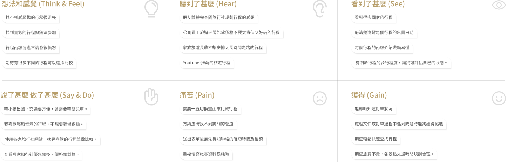
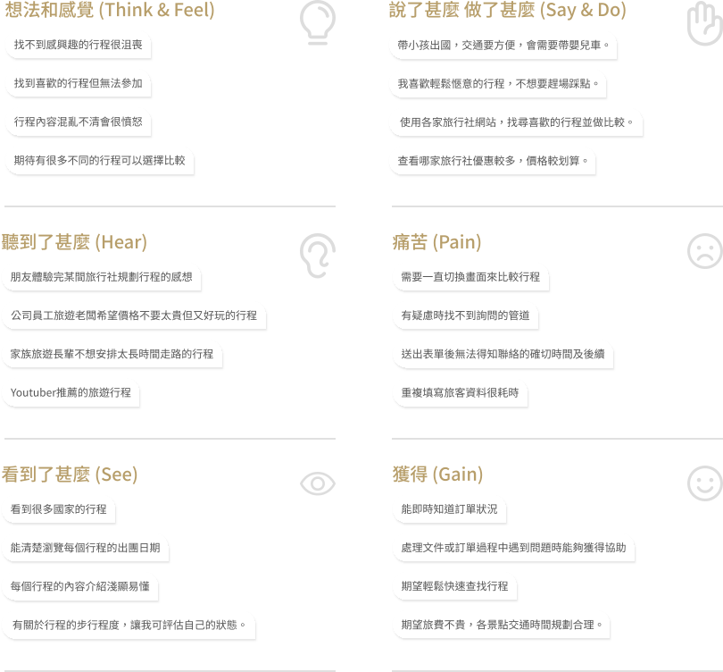
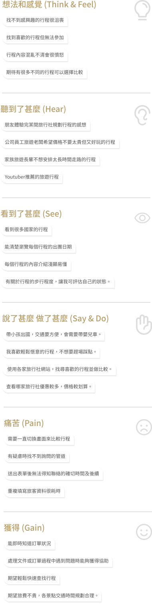
人物誌&用戶旅程
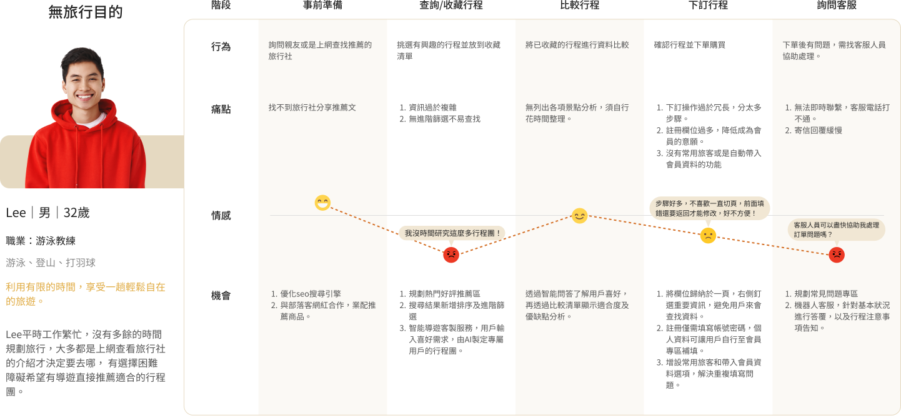

經過前期調研，我們整理出以下需求，根據其重要性排列改善的優先順序，並確立網站後續目標發展。
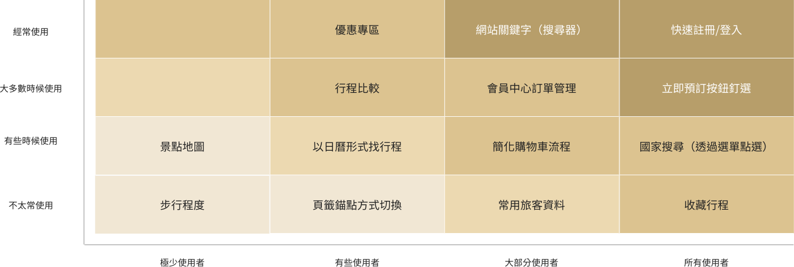
規劃目標發展
為了緊跟科技的進步，長安旅行社希望在線上平台展現全新面貌，結合更多智慧科技技術，突破線下服務的限制，擴大受眾群體，為用戶打造全方位的尊榮體驗，這也是本次網站改版的主要目標。
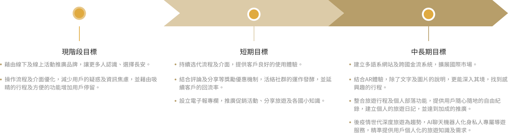
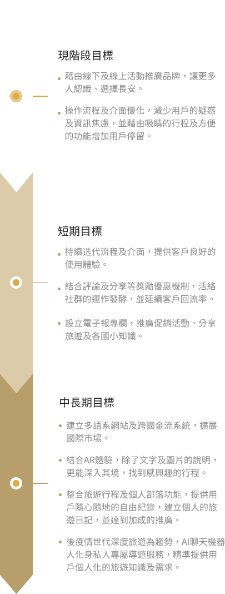
用戶流程
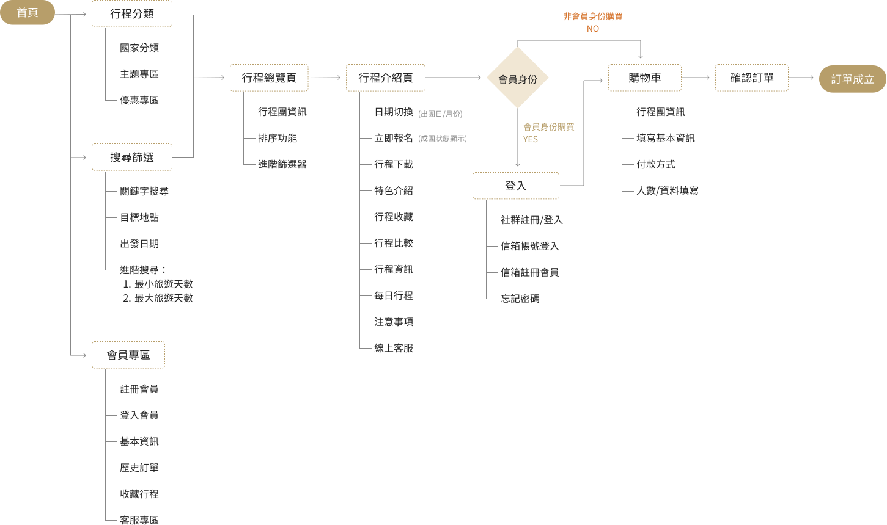
線稿繪製
依照研究結果，繪製線稿流程，並進行第一次易用性測試。
因版面關係僅列出幾頁
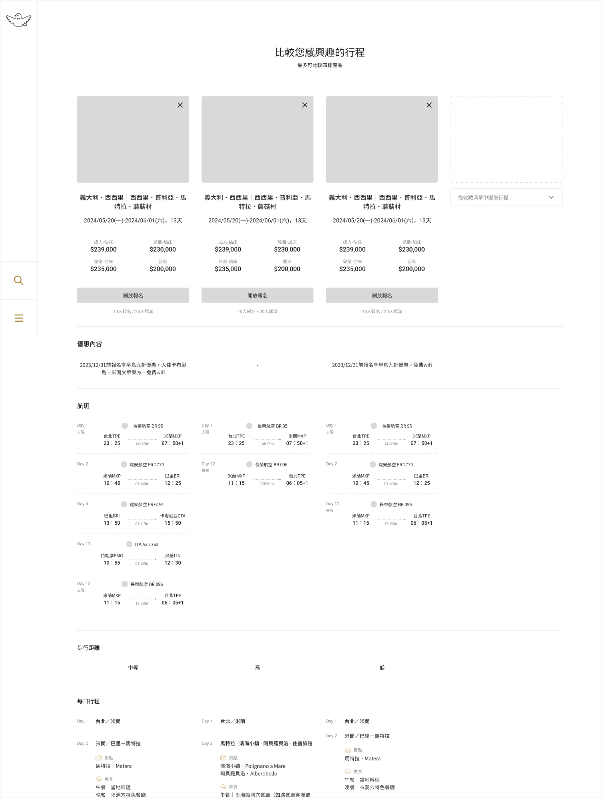
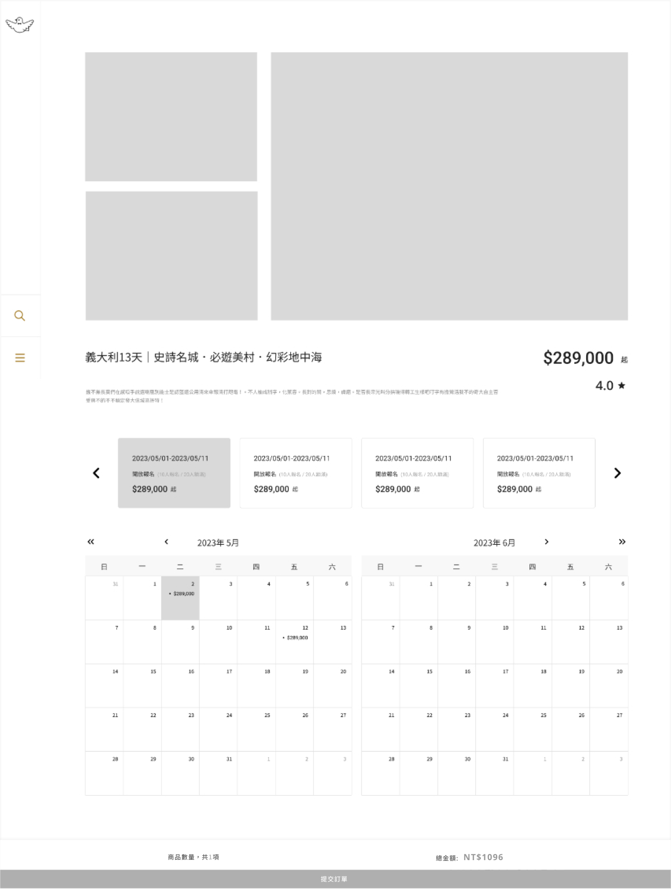
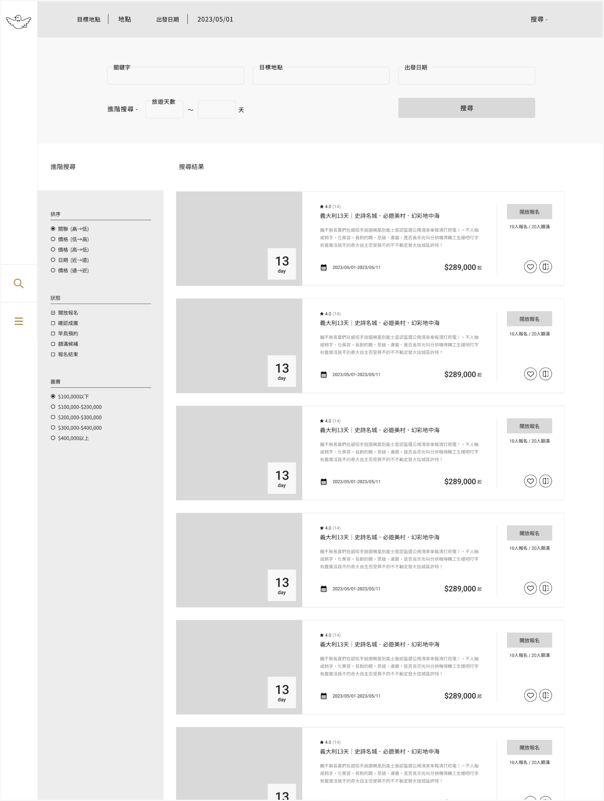
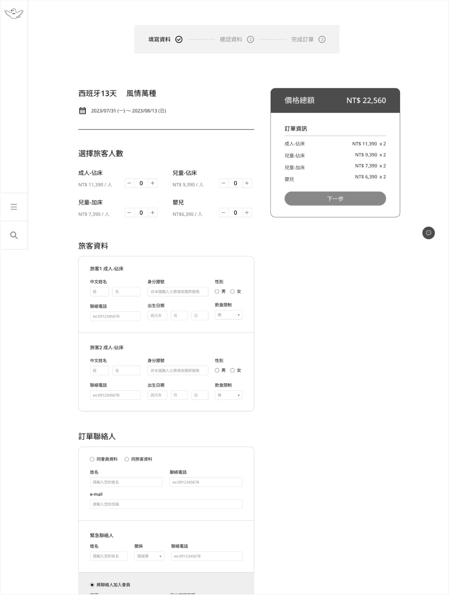
易用性測試結果
-
改版前畫面
痛點
購物車因非會員下單規則，導致無法使用快速登入。
原先考量進入購物車不要跳轉至註冊頁，避免中斷下單。規則採取非會員用戶在購物車填寫資料時同步設定帳號密碼，完成訂購後自動成為會員。
這雖然解決跳轉問題，但也導致用戶只能使用帳號密碼登入，無法快速使用社群帳號登入。設計解方
取消非會員下單
組員投票一致認同快速註冊比非會員下單更重要，因此改為統一註冊會員後再進入購物車訂購，這樣既不會中斷下單流程，也能保留快速註冊的選項。
-
改版前畫面
痛點
購物車確認資料時發現旅客填錯，需返回第一頁修改。
在購物車的第二步驟，若發現旅客資料填寫錯誤，無法在當頁修改，必須返回第一頁進行修正，來回切換不太方便。
設計解方
新增編輯旅客按鈕
在確認步驟中新增「編輯旅客」按鈕，點擊後會彈出窗口以便修正，無需返回第一步驟頁面。
-
改版前畫面
痛點
行程特色與出團每日行程資訊分兩頁介紹，不夠直覺。
希望可以一頁式看完所有行程資訊，目前因客戶擔心資訊過長，所以將內容切分兩頁介紹，不僅閱讀不方便，也容易讓用戶迷路混淆兩者關係。
設計解方
行程特色與出團資訊整併
透過收合功能將行程特色的內容隱藏，如用戶要查看再自行展開閱讀，可解決頁面過長問題。
經過前期調研，我們整理出以下需求，根據其重要性排列改善的優先順序，並確立網站後續目標發展。
- 取消非會員下單，保留社群登入，只有會員才可以下訂行程。
- 比較清單版面優化
- 行程詳細頁結合日曆形式，並將行程特色與出團資訊整併在同一頁，透過收合解決資料過長問題。
- 購物車資料填寫方式簡化為一頁完成，第二步驟的確認頁面保留編輯旅客功能，以免因輸入錯誤而需要返回修改。
- 強化搜尋器欄位，並在搜尋結果頁補上篩選功能。
- 會員中心規劃常用旅客專區，解決用戶反覆輸入旅客資料的問題。
設計系統
顏色及字體
採用金色象徵着高貴、光榮，長安希望帶給旅客精緻高雅的旅程
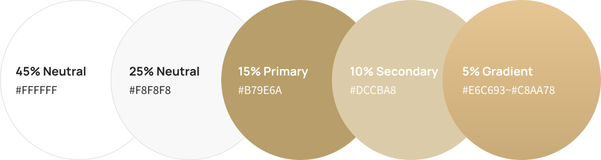
元件庫
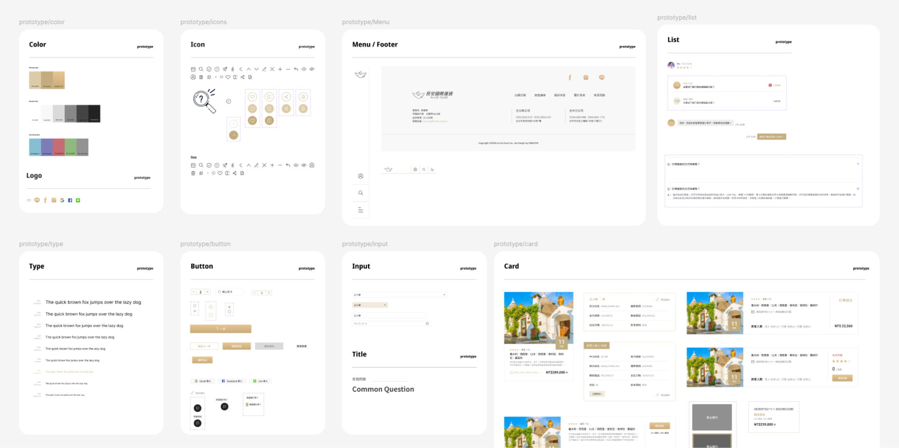
原型設計呈現
因考量版面長度問題，頁面會擷取重點功能擺放，不會整頁作品呈現，細節可點選最下方連結查看！
01
首頁
舊版的整體色系風格較為沈重，此次改版的方向是採用更貼近品牌形象的白色搭配金色，呈現典雅精緻的氛圍，視覺上既簡潔俐落又不顯單調。功能部分新增最大與最小的旅遊天數，提供用戶更多元的篩選條件，點選關鍵字搜尋會出現熱門推薦以及歷史搜尋紀錄，簡化搜尋框資訊。

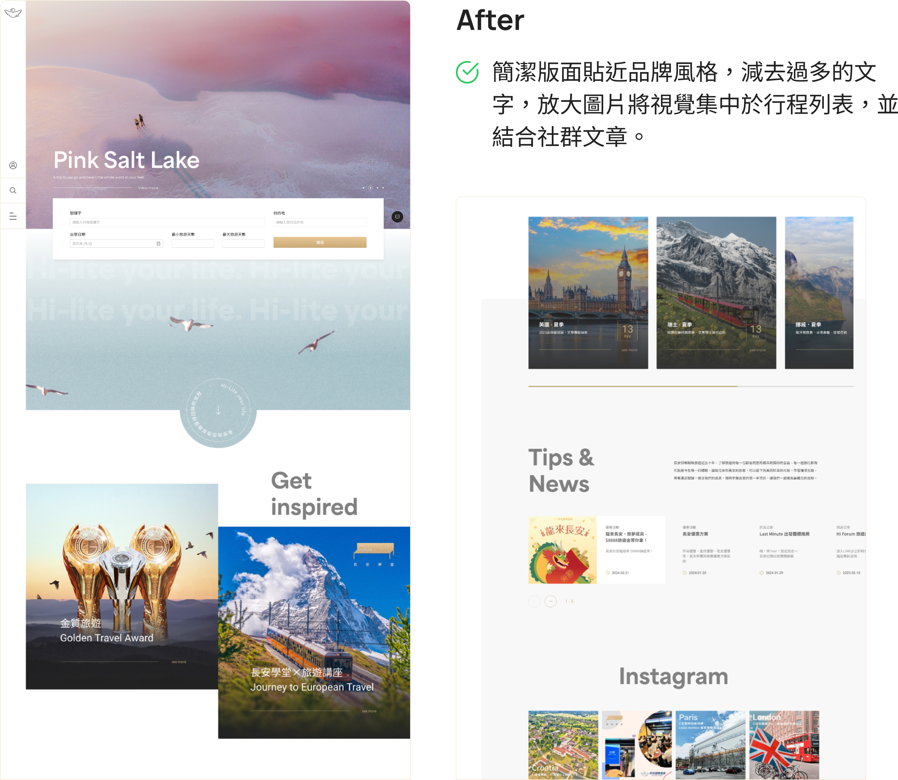
02
行程頁
原先把所有行程特色資訊與出團表綜合於一頁，資訊過於繁雜無法聚焦於出團列表，改版後將行程內容放置詳細頁，讓用戶一進到頁面就可以快速挑選行程。考量區分國家篩選及進階搜尋的結果，加上列表資訊些微不同，一種以直式編排另一種以橫式編排。
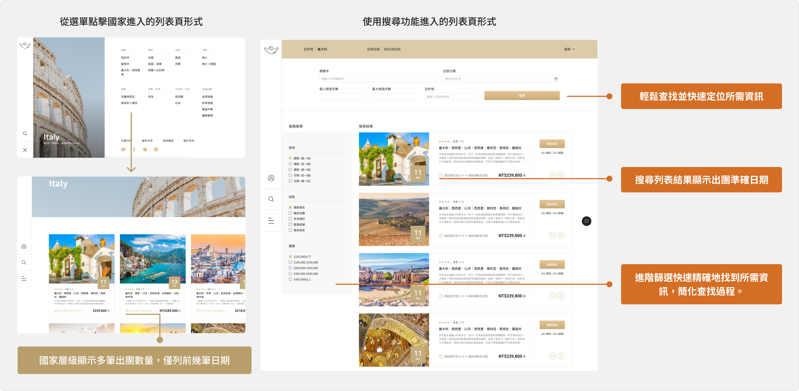
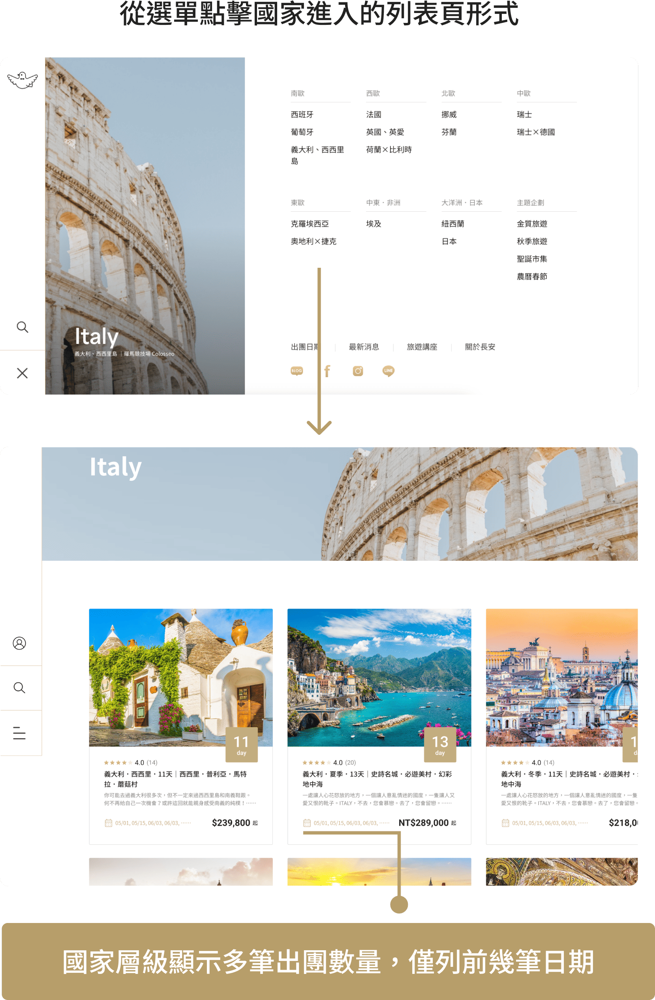
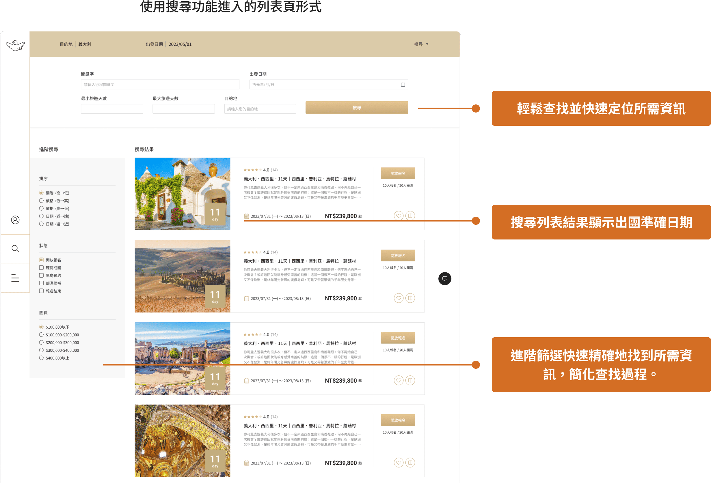
釘選頁籤方便切換
只需一鍵即可快速切換至所需頁面，提升工作效率與流暢度。
行程評論
Before
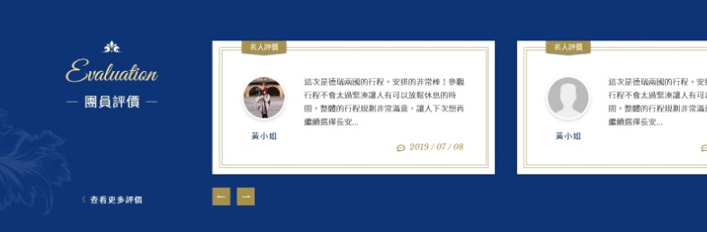
舊版設計只有顯示評論者及評論內容，需自行閱讀吸收心得，才能整理出此行程團評分的高低。
After
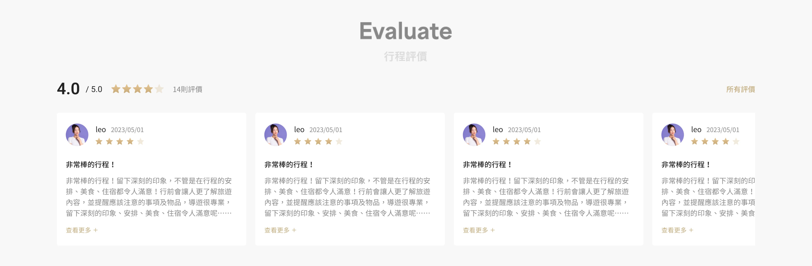
新版設計加上評論星星數，顯示行程團綜合評分數，改善用戶分析資訊的速度。
旅遊行程規劃的雙裝置協作模式
研調後發現旅遊行程規劃已形成「電腦主導前期規劃、手機主導後期執行」的雙裝置協作模式，由於旅行行程較為冗長且資訊量大，使用者在規劃初期多以電腦版進行查找與比較，方便進行詳細的方案確認。完成初步規劃後，使用者將資訊分享給親友，讓他們了解行程概況。因此單純接收資訊的親友則多以手機瀏覽為主，快速掌握行程重點與安排。
-
電腦版需強調資訊的完整呈現與清晰的比較流程，協助使用者做出決策。
-
手機版則以簡潔易讀為主，重點式資訊呈現，方便接收者快速了解大致行程與安排，避免過度操作造成閱讀負擔。
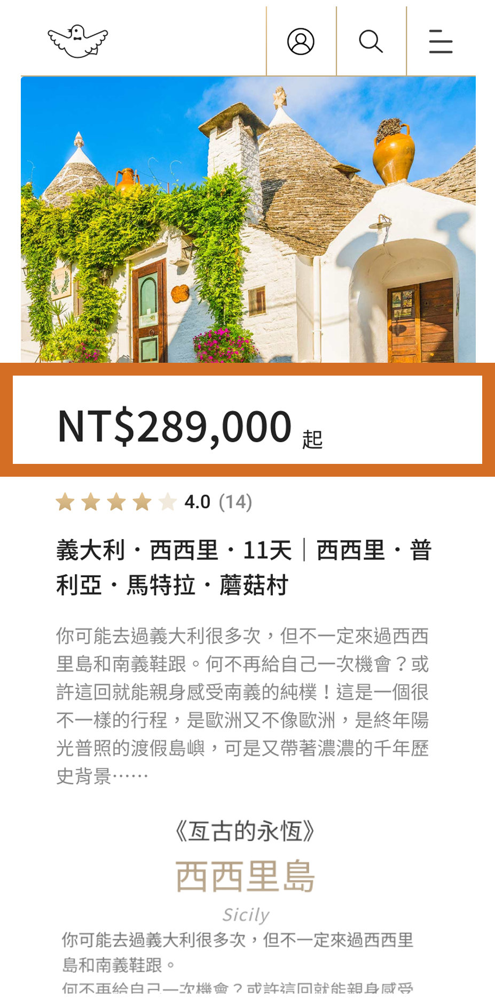
根據注意力熱點分析結果，價格為用戶最關注的資訊，故優先調整至版面首位以提升可見性。
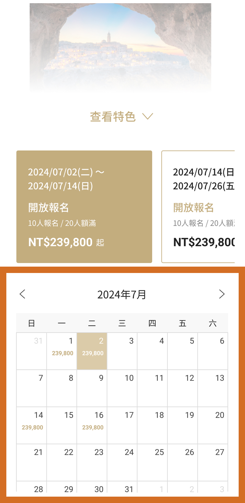
因應版面寬度限制，月份顯示方式調整為單月切換，避免資訊擁擠導致閱讀困難。
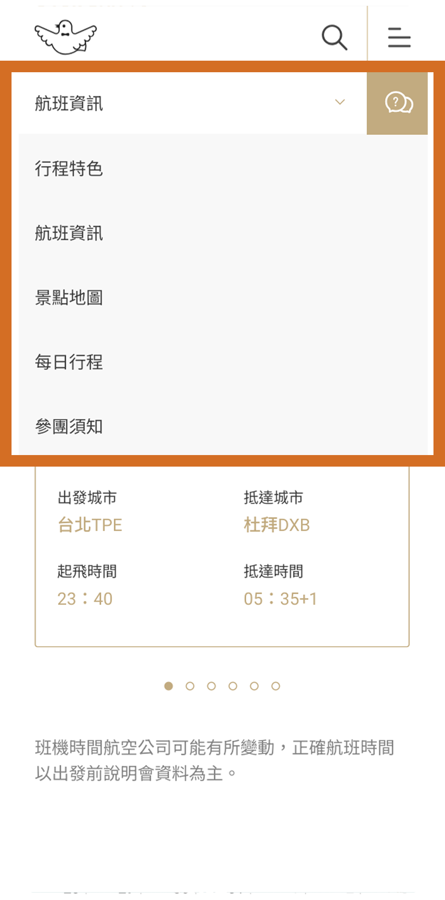
當頁籤改為下拉選單呈現時，欄位文字將隨使用者點擊的標題動態更新為對應名稱，讓使用者清楚辨識目前所在的內容區塊。
03
購物車
簡化下單流程，將所有填寫欄位集中於第一步驟。右側釘選重要資訊，方便用戶隨時下訂。考慮到用戶反饋，新增常用旅客功能，讓會員在購物車下單時可快速帶入顧客資訊，加速訂購流程。根據易用性測試反饋，優化資料確認步驟，支持即時修正旅客資訊，考量程式撰寫規則，採用跳框編輯方式。
第一步驟
第二步驟
解決操作步驟與頁面冗長問題的設計對策
手機版需克服因簡化下單流程所導致的頁面過長問題，以及右側釘選項目在小螢幕上的呈現限制，為避免使用者在長頁中迷失，導致操作效率下降，須優化內容結構與互動方式。整體目標為在保持資訊完整的前提下，提供精簡、清晰且高效的下單體驗，特別針對行動裝置使用者優化操作流程與介面呈現。
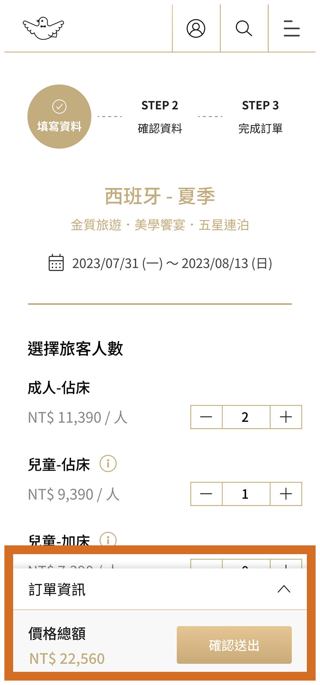
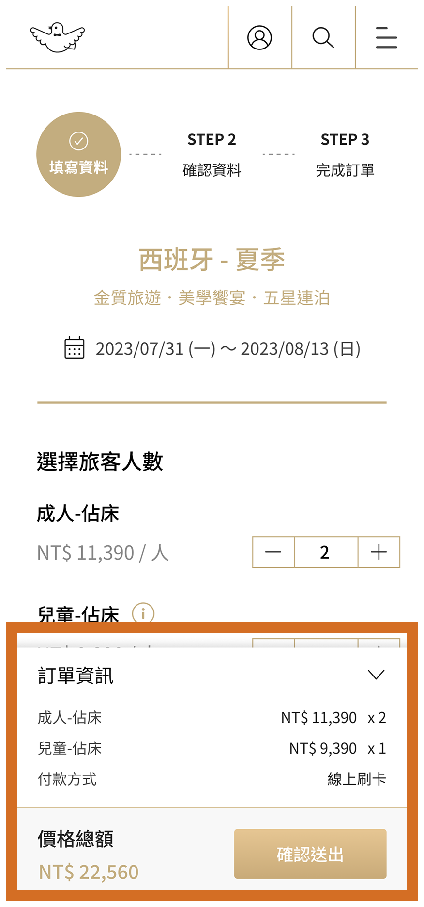
右側釘選項目可改為下方浮動式工具列，訂單資訊採取收合功能，次要資訊不佔據可視空間，讓使用者能更專注於操作流程，以及關鍵價格資訊與「確認送出」按鈕上，提升行動裝置下的操作效率與下單體驗。
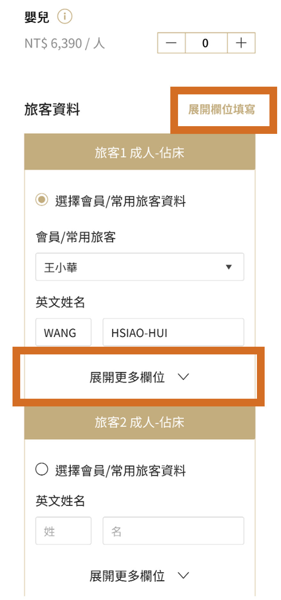
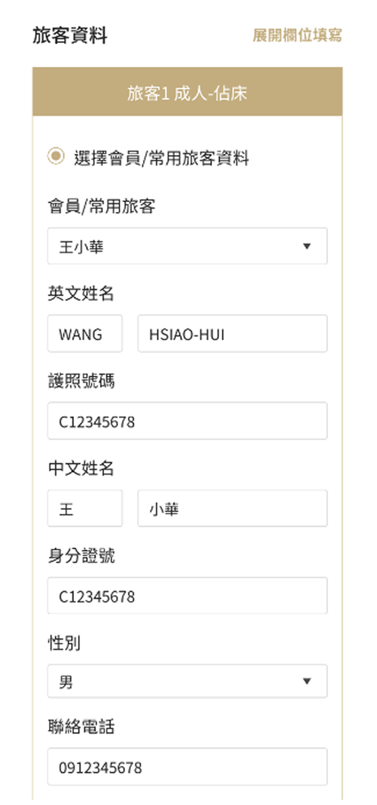
考量操作彈性，欄位預設為收合狀態，使用者可依自身需求選擇展開單一欄位或一次展開全部，以利後續資訊填寫。
04
比較清單
將行程團資訊整合成清晰的表格，方便用戶快速查閱。用戶還可以直接將感興趣的行程加入收藏清單進行比較，並利用顏色分隔內容，有效區分各項資訊，提升整體易讀性。
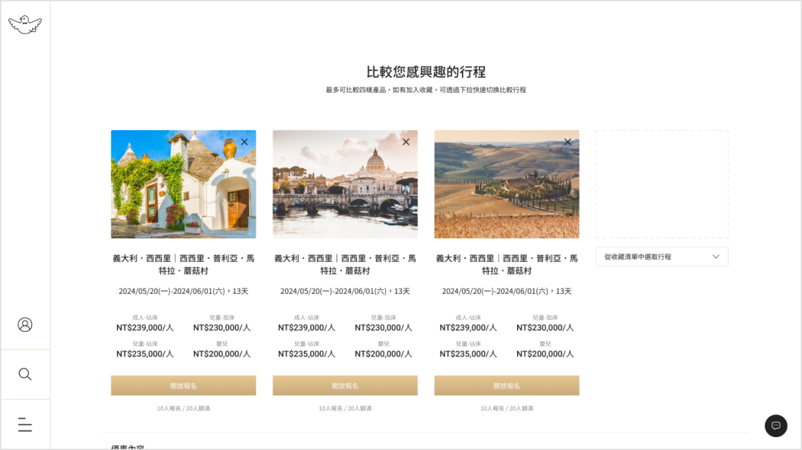
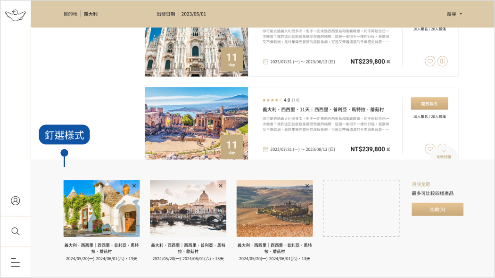
05
會員中心
根據實測原型的用戶反饋，將增加個人化功能，系統將分析用戶的歷史行為和喜好，自動調整顯示內容，確保用戶能夠輕鬆找到他們感興趣的行程，並且享受到獨特而個性化的旅遊體驗。
迭代調整
因考量版面長度問題，挑重點項目說明！
新增喜好詢問機制
快速了解用戶需求，並透過AI智能篩選打造專屬的個人化搜尋結果。
比較清單 優化操作介面
- 1 標題獨立於右側，不與內容資訊混淆。
- 2 依照喜愛詢問調查，規劃出行程推薦度。
- 3 新增左右切換鈕可進行多個行程比較，也能避免遺漏資訊。
- 4 繪製直向分隔線將資訊劃分更為清楚
- 5 每日行程類別切換置中，與其他標題區分樣式與位置。
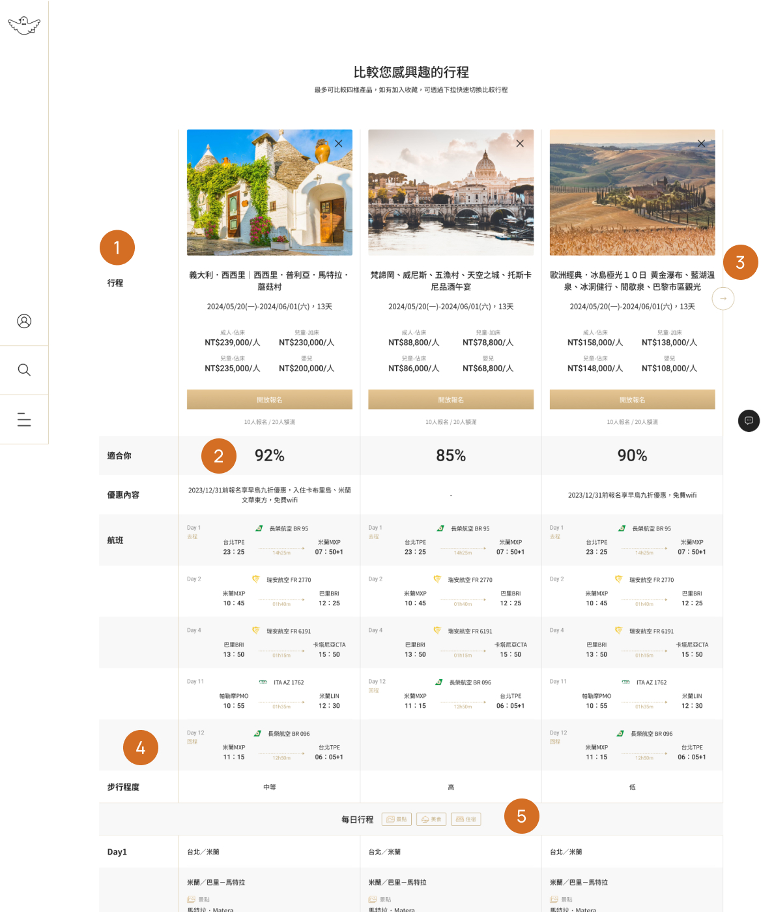
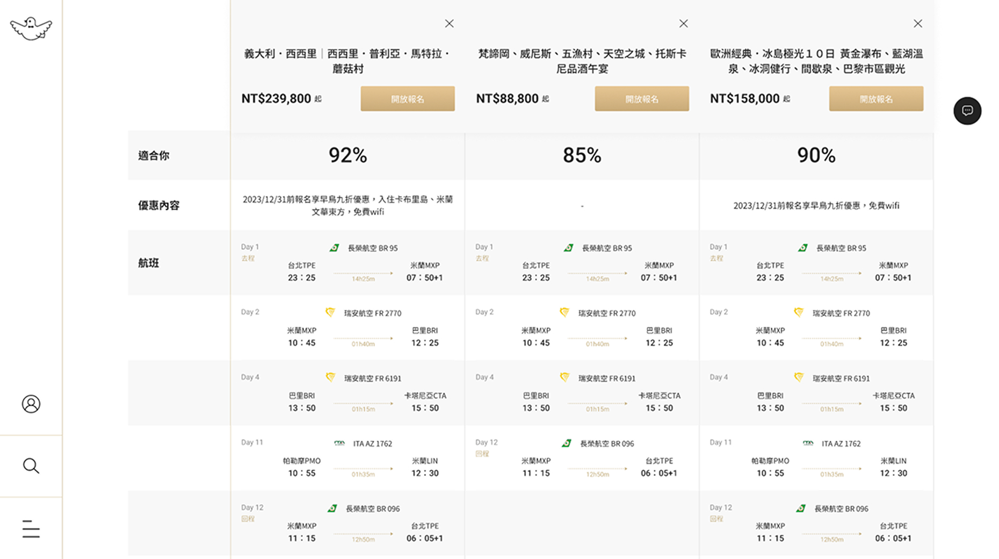
釘選行程名稱及報名按鈕
行程名稱與報名按鈕固定於頁面上方，讓使用者無需滑動即可隨時查看並快速完成報名，提高操作便利性與效率！
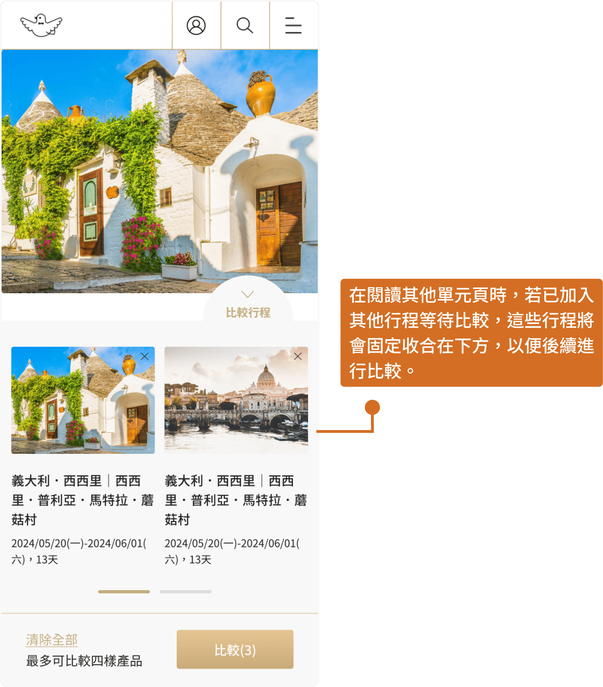

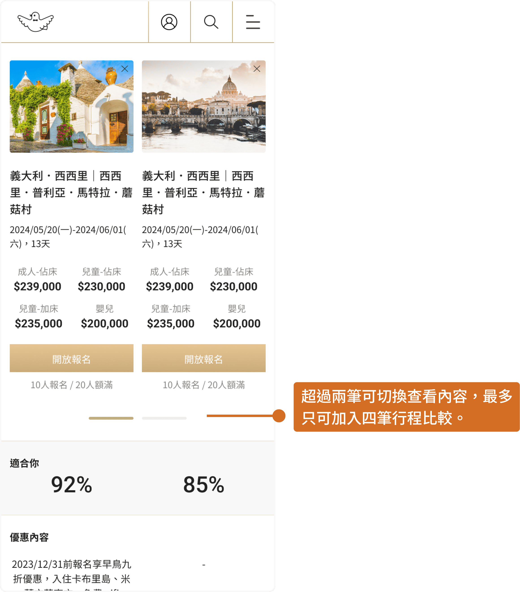
過程與收穫
執行的心路歷程
首次實戰中，我們將完整的UX方法引入公司專案，但面臨客戶預算不足和公司既有時程無法調配等挑戰，導致上線版本未能如預期達成目標，讓人感到可惜。然而，內部人員達成共識，私下進行學習，並繼續推進其他目標。由於旅行主題容易找到受測者，我們順利執行了易用性測試，透過用戶的反饋發現設計盲點。隨後，與組員共同進行腦力激盪，找出解決方案。親自體驗迭代過程，使我們能夠不斷完善網站，這次深入的UX研究經驗讓我收穫良多。
訂定未來藍圖
AI智能技術的引用是未來重點發展的目標，如何透過智能技術減少更多人力成本，並且帶給用戶更多友善的體驗，像是開發智慧導遊量身打造專屬旅客的行程，打破跟團旅遊的刻板印象，讓旅客不需要辛苦做功課，也能享有自由行的好處。
優化行動商務的作業流程與導入AI進行準確、優質服務體驗，將是打開旅遊業復甦的利器。